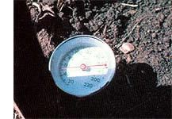
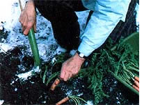
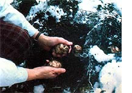
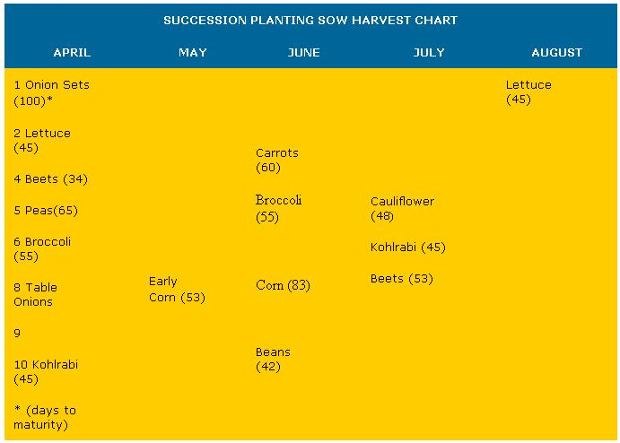

Enjoy A Fall Vegetable Harvest
July/August 1980
by CYNTHIA B. CRISCOLL
A little careful planning and a little succession planting during the midsummer dog days can help you get almost double the usual production from your garden. So why not sit right down, dig out those seed catalogs, and get ready to . . .
If you're like most gardeners, you probably plant a few late crops each summer (more as an afterthought than anything else), but perhaps you've never seriously considered coaxing a full second harvest from your vegetable plot. I know I never gave the possibility much thought . . . until one autumn morning when my shovel hit a 12-inch-long white radish (of the oriental Dalkon variety) buried deep in the still warm earth. That delectable vegetable inspired me to systematically plan and cultivate a late harvest in my backyard plot.
Since the "day of the Dalkon", I've learned (mostly by trial and error) how to nearly double my annual harvesteven here in Minnesota, where the growing season is quite short by starting a second crop during the hot weather months. And you can enjoy the same success . . . with just a little planning and careful attention to the details that make late summer and fall planting different from spring sowing.
THE DRAWING BOARD
Any venture into three season gardening should begin with thorough planning . . . including seed selection and a "blueprint" plan to fit your particular growing season. If you're not sure of the dates of the last killing spring frost and the first autumn freeze in your area, the county agricultural extension agent can provide you with the information.
You might be surprised to find that the length of your own property's frost-free growing season is different from that of even your closest neighbor's land. . . because of variations in the terrain. As you know, warm air rises . . . so a hilltop garden is encouraged to produce abundant harvests both early and late in the season. On the other hand, the cooler air in valleys (especially those with spring fed streams) may surround a lowland garden with a cold and clammy atmosphere that's not conducive to either early or late cropping.
Although it's hardly practical to move your family to an area with a longer growing season just to be able to try succession planting, you can make some onsite adjustments that will help you grow late crops successfully. First of all, be sure to locate your garden where it won't be shaded by tall trees . . . which rob the young plants of sunlight and soil nutrients. It's also a good idea to place your vegetable plots on the south and east sides of buildings . . . or to protect the crops from punishing north winds by putting in shrubs (or another type of low windbreak) along the garden's vulnerable edge. You might also. want to plant your early and late crops toward the top of a slope, or in raised beds.
DO YOUR HOMEWORK
Once you know the limits of your frostfree season and have chosen a site for your garden that will make the best use of that time periodyou're ready to pore over the seed catalogs. You will, of course, need frost tolerant vegetables in order to extend your garden's productive life into the autumn. Hints in catalog descriptionssuch as "sown in early August for fall crops" . . . "will increase in eating quality into late fall" . . . and "best in September when nights are cooler" will help direct you to the proper selections.
You should choose only the hardiest cultivars ( those that can survive a minimum temperature of 26°F) and those that mature quickly . . . especially if you live in the upper part of North America. A short season cabbage, for example, might have a better chance of coming to harvest than would a slower growing "main crop" cabbage.
You'll find all kinds of robust vegetables in the catalogs of seed companies catering to a northern U.S. or Canadian clientele . . . since such firms often specialize in short season crops that are ideal for succession planting. Here are some reliable companies to try: Stokes Seeds, Inc., Dept. TMEN, Box 548, Buffalo, New York 14240 . . . Farmer Seed and Nursery, Dept. TMEN, 818 Northwest 4th Street, Faribault, Minnesota 55021 . . . and Johnny's Selected Seeds, Dept. TMEN, Albion, Maine 04910. (The last one is an especially good source of late producers. The firm's fine catalog features such prime midseason and fall crops as Lutz Green Leaf beets, Scarlet Keeper carrots, Wando peas, and Danish Ballhead cabbage.)
Once you've narrowed down your preferences to a few specific varieties, it will be helpful to draw up a Succession Planting Sow-Harvest chart (like the sample accompanying this article). On paper, you can easily shuffle and rearrange the garden rows like puzzle pieces . . . as long as you keep in mind the approximate sowing and reaping dates for each crop. For instance, you might like to try an early lettuce, succeeded by midseason carrots ( as in Row 2 ) . . . or follow an early cabbage with a late beet (Row 7). Most horticultural experts recommend planting a root crop after a leafy vegetable, in order to balance the supplies of the different nutrients that each type of plant removes from the soil.
Although the chart shown here was formulated for the cold climate of Zones 3 and 4, it can be modified to fit the growing season in warmer locales by simply adding time to either end. (A Plant Hardiness Zone Map can be ordered-for $1.00-from the Superintendent of Documents, U.S. Government Printing Office, Washington, D.C. 20402 . . . ask for USDA Miscellaneous Publication No. 814. ) You may have to adjust your master plan to adapt to an unusually late spring or an unexpected cool spell, as well. (I always allow an extra week for each crop, anyway. . . to accommodate any unforeseen weather changes.)
When you formulate your succession planting schedule, remember to take advantage of some of the newly developed hybrid cultivars, many of which mature in significantly shorter growing periods than do older types. The 1979 All America Grand Duke hybrid kohlrabi, for example, will mature five days sooner than would previous varieties of the vegetable . . . and five days can be quite significant for gardeners in cooler climates!
SEEDING AND TRANSPLANTING
No matter what zone you live in, you'll find that planting a fall garden is quite different from spring sowing . . . since the late year cropper has to deal with less than favorable conditions. The soil at midseason is warm and dry (and already depleted of many nutrients by the earlier crops), and transplants aren't readily available from local nurseries once summer is well established.
Most of my early attempts at planting for autumn harvest ended in failure . . . simply beause I didn't know that seeds have maximum as well as minimumgermination temperatures. The optimum soil temperatures for sprouting many cool season vegetables are well below 80°F. (For example, endive, lettuce, and spinach germinate spottily if at all in soil that's warmer than 75°F. )
To deal with this problem, use a soil thermometer (as I do) to determine when your garden's ground is registering above the maximum germination temperature for a particular seed. If the soil gets too warm, you can temper the planting environment by covering newly seeded rows with a board or straw bale (as insulation against the summer sun), by planting in the shade of a tall crop (such as pole beans or sweet corn), or simply by sowing presprouted seeds (you can germinate them yourself in a sprouting jar placed in a cool cupboard).
If your fall garden plan requires that you set out plants-in order to harvest a mature crop before midwinter you may be able to find the "starts" you need at a local nursery . . . however, many garden centers overlook the needs of autumn agriculturists, so you'll probably have to place a special order earlier in the season. Should you decide to grow your own second crop transplants, on the other hand, a cool basement equipped with a grow light will serve as an ideal environment for nurturing young seedlings.
A botanist once showed me how to stretch my garden's production of tomatoes long past the normal season by propagating midsummer suckers. To do this, I simply soak the trimmed young tomato shoots in a bucketful of warm water for four to six hours before planting them. Such July transplants will produce large, healthy vegetables long after the regular vines of summer have been exhausted.
CULTIVATION
With April showers only a distant memory, you'll probably have to spend a lot of hours watering your late summer plot. However-if you don't want to become a slave to the August seedlings use mulch or a covering of straw to help retain soil moisture. (I use a mulch mixture made of one part soil and one part compost.
You'll also need to fertilize your mid season crops generously, since they be gin their garden lives in soil whose nutrients have been depleted by the previous crops. But transplants will respond wit lush growth if they're initially watered with a highphosphorus rooting solution and then sidedressed with a balance fertilizer (I just use whatever manure i handy). Always make sure you side dress away from exposed plant parts, though . . . to avoid fertilizer burn.
It's a good idea as I mentioned before to rotate leafy and root crops, in order to balance the food supply in the soil. I also like to plant some kind of peas or beans at regular intervals in each row since legumes collect nitrogen from the air and transfer it to the soil.
GETTING READY FOR SPRING
Even your lush, extended fall harvest has to end, however . . . and finally the hard frosts of early winter will take their toll. That's your signal to "close u shop" and prepare your garden for spring planting. I usually convert all of the healthy plant residue to compost . . . an then I till pony and chicken manure into the plot to replenish the soil. (The late plowing is also good for turning up pest eggs and larvae . . . and exposing they to winter's killing temperatures.)
I work several rows smooth, in order t have them ready for planting early or ions, peas, spinach, and radishes. However, several late fall crops-such a sprouts, carrots, beets, and kale-ofte survive until Thanksgiving ( even up her in Minnesota!), so their furrows have t wait until spring for soil preparation.
As you can see, a midsummer sowing of seeds and transplants will-with careful planning and culture mature into delicious vegetables for late season eating. When the new seed catalogs begin to arrive in December, I'm usually just harvesting the final produce from m midseason garden . . . and it's ahead time to start planning spring crops! It seems as though the work/fun never ends . . . but that's just a happy fact of life for three season gardeners!
PHOTOS BY THE AUTHOR
 The author displays a basket of her succession planted autumnal harvest: carrots, Jerusalem artichokes, brussels sprouts, radishes, and broccoli. |
 Using a soil thermometer can help insure germination .... You can harvest vitamin-rich carrots right up through Christmas .... Tasty Jerusalem artichokes will stay crisp all winter under their blanket of snow and soil. |
 |
|
 |
 |
|